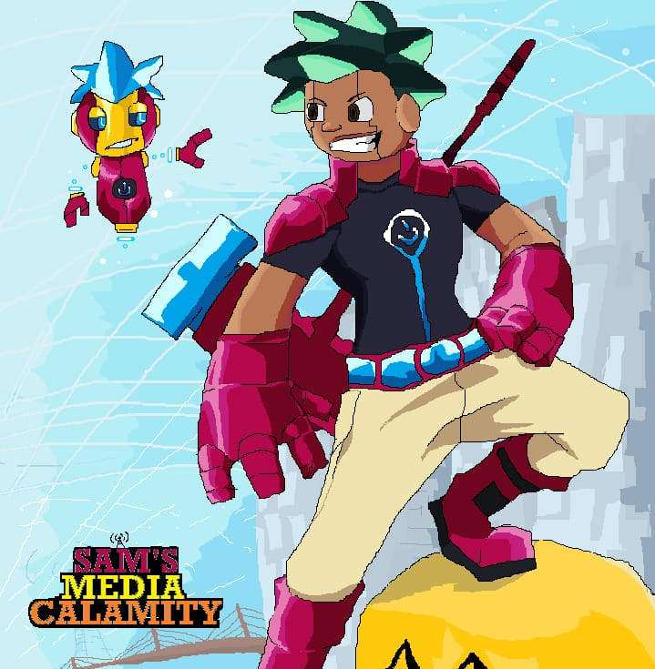
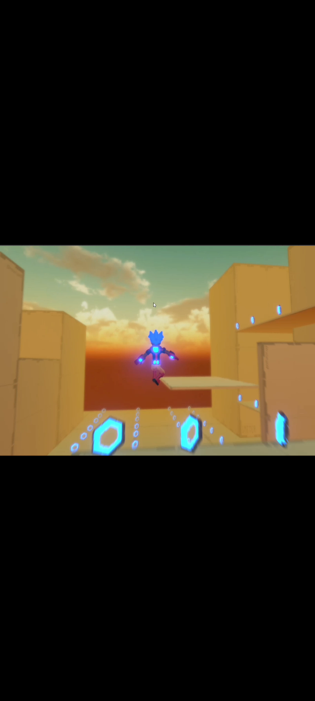
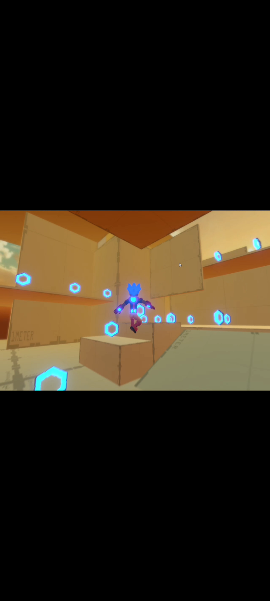
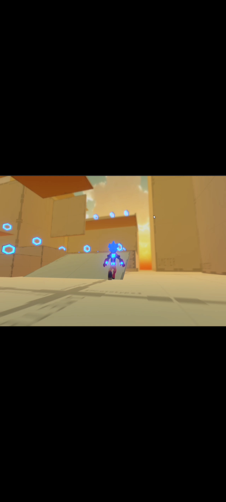
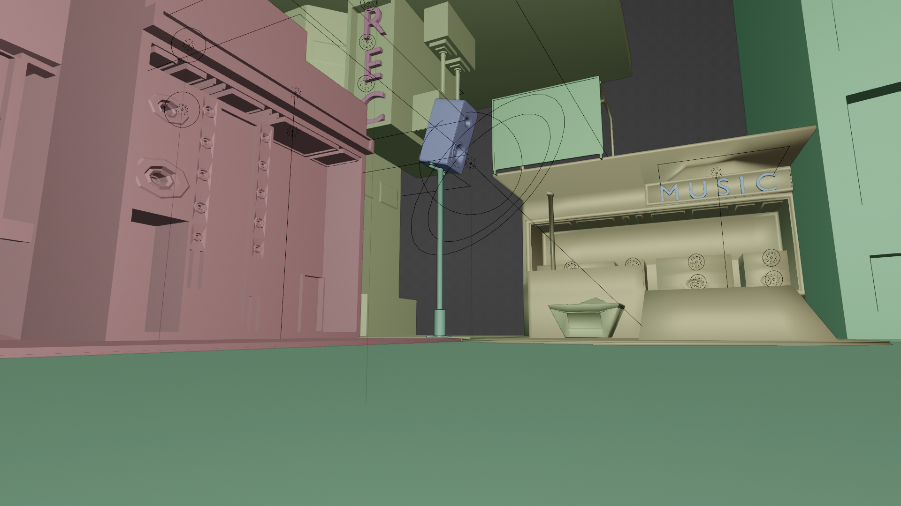
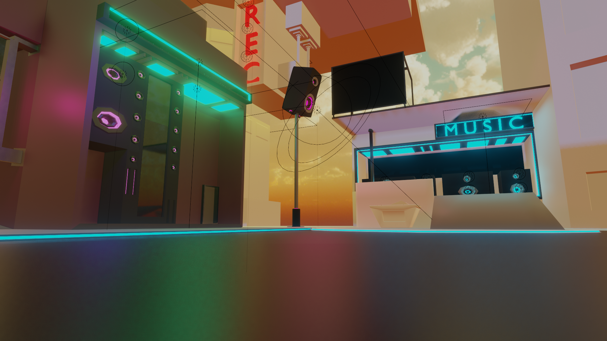
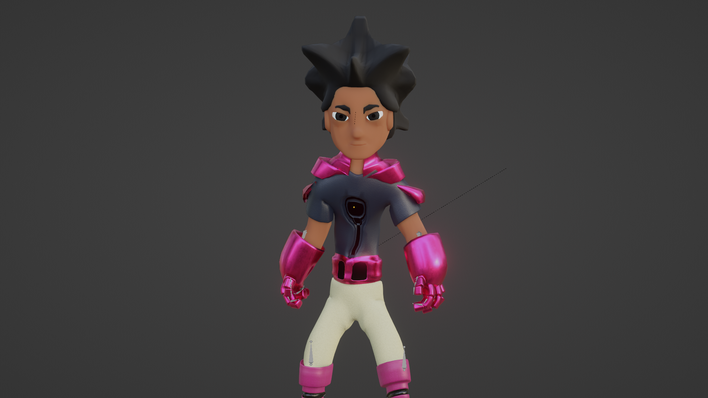
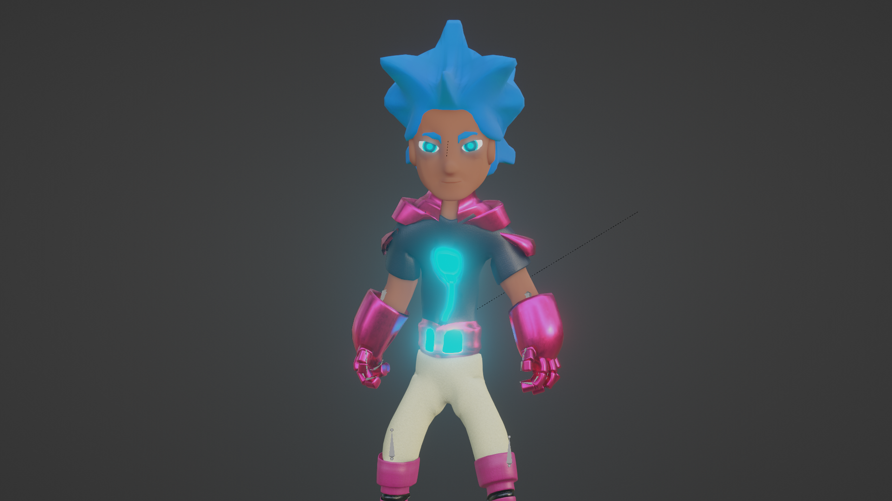

A 3D Action Platformer About an Antivirus Who Was Never Meant to Be Human.

EXPLORE THE GAMESam is an antivirus built to eliminate bugs and restore the internet. But as he travels through a corrupted digital world, something inside him begins to change.
The more Sam discovers about his world, the more he questions what he was created to do — and what he is becoming.
Fast movement, acrobatic combat and exploration across a chaotic digital world.



SAM'S MEDIA CALAMITY takes place inside a chaotic digital world inspired by the internet, where different systems have evolved into their own strange environments.
Districts, systems and digital spaces each have their own identity, characters and threats as Sam travels deeper into the network.
Harmonia is the first major environment currently being developed for SAM'S MEDIA CALAMITY.
The environment is currently in the blockout stage in Blender. These images show its development from an early prototype toward a more developed lighting and visual direction.

EARLY PROTOTYPE
LIGHTING DEVELOPMENTThe next stages of development will include further environment detailing, texturing and eventually bringing Harmonia into Unity.
STATUS: IN DEVELOPMENTSam is an anti-malware system built to remove bugs and restore the digital world. Throughout his journey, Sam can operate in two different forms.

Sam's standard operating form. Balanced movement and combat designed for exploration and platforming.

Sam's powered-up form, giving him increased mobility, speed and combat ability.
SAM'S MEDIA CALAMITY is being developed independently by a solo game developer.
Follow the development journey as the world, characters, combat, animation and environments continue to evolve.
SAM'S MEDIA CALAMITY is being developed independently, one step at a time. Follow the development to see new gameplay, environments, characters, animations and behind-the-scenes progress.